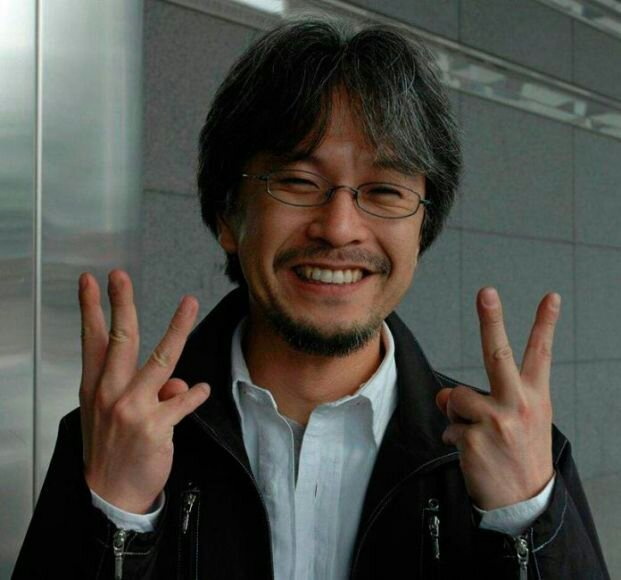

Qui a inventé le personnage de Monkey D luffy ?

Dès l’âge de quatre ans, Oda décide de suivre une carrière de mangaka et se passionne pour les vikings (notamment grâce au manga Vic le Viking2 auquel il fait des allusions fréquentes dans One Piece[réf. nécessaire]) et les pirates.
En 1992, il reçoit les honneurs du 44e Prix Tezuka pour sa nouvelle Wanted, un western dont le héros est hanté par le fantôme d’un homme qu’il a tué. L’année suivante voit sa première publication professionnelle, Un présent divin (神から未来のプレゼント, Kami kara mirai no puresento?), dans le Jump Original d’octobre 1993. La même année, il gagne le concours de talent mensuel organisé par la rédaction du Weekly Shōnen Jump, le prix du manga Tenkaichi, avec la nouvelle intitulée Le démon solitaire (一鬼夜行, Ikki Yakō?).
Après avoir abandonné l’université, il se rend à Tokyo en 1994 et devient l’assistant de trois mangakas travaillant pour le Weekly Shōnen Jump : Shinobu Kaitani (Midoriyama Police Gang), Masaya Tokuhiro (Jungle no ōja tar-chan, Mizu no tomodachi kapparman) et Nobuhiro Watsuki (Kenshin le vagabond). Il travaille alors aux côtés d’un autre assistant : Hiroyuki Takei, qui créa par la suite Shaman King.
En parallèle de son travail d’assistant, Eiichirō Oda publie deux nouvelles : Monsters dans le Autumn Special de 1994 et la première des deux versions de Romance Dawn dans le Summer Special de 1996. Quelques mois plus tard, il fait enfin sa première apparition dans les pages du Weekly Shōnen Jump avec la deuxième version de Romance Dawn.
Mais Oda ne connait véritablement le succès qu’après la publication du premier chapitre de son œuvre phare, One Piece, dans le numéro 34 du Weekly Shōnen Jump de 1997. Le manga gagne alors très vite en popularité et devient une référence incontournable du genre shōnen au même titre que Dragon Ball d’Akira Toriyama. Il est l’un des rares mangakas à avoir dépassé la barre des 100 millions de mangas vendus pour une œuvre au Japon et chaque nouveau tome de la série se vend à plus de trois millions d’exemplaires.
En 2004, il s’est marié avec Chiaki Inaba (稲葉ちあき Inaba Chiaki), une actrice ayant interprété Nami dans un épisode spécial du Jump Festa. En 2006, Chiaki Inaba a donné naissance à une petite fille, la première fille d'Oda. Le couple a accueilli une deuxième fille en 2009.
Le 25 décembre 2006, le Weekly Shōnen Jump publie pour célébrer le 10e anniversaire de One Piece : Cross Epoch, un crossover réalisé par Eiichirō Oda et Akira Toriyama (son exemple parmi les mangakas).
En octobre 2009, le manga One Piece atteint la barre de 170 millions d’exemplaires vendus au Japon d’après Shūeisha et bat ainsi le précédent record détenu par Dragon Ball, écoulé à 150 millions d’exemplaires.
C’est en novembre 2010 que One Piece atteint la barre des 200 millions d’exemplaires vendus au Japon[réf. nécessaire]. Oda devient donc le premier mangaka à atteindre ce stade, avec seulement une série. En novembre 2013, c’est 300 millions d’exemplaires de One Piece qui sont imprimés au Japon3,4. One Piece est donc le manga le plus vendu au monde[réf. nécessaire].
En 2017, alors que One Piece fête son 20e anniversaire, il est annoncé que le manga a été édité à plus de 450 millions d'exemplaires. Au Japon, le tirage s'élève à 380 millions d'exemplaires, tandis que dans le reste du monde ce sont 70 millions d'exemplaires des aventures du célèbre pirate qui sont en circulation (dans 42 pays).
L'enfance de Luffy

Luffy passa son enfance dans un village de pêcheurs nommé Fushia Town situé sur East Blue. Son grand père, Monkey D. Garp voulait en faire un grand marin et "l'endurcit" en le jetant dans un puits sans fond, l'abandonnant dans la jungle ou encore l'attachant à des ballons pour le laisser s'envoler dans le ciel, bien que son petit-fils veuille depuis toujours devenir pirate. Il se lia d'amitié avec une bande de pirates qui avait pour capitaine Shanks le roux. Luffy était éperdu d'admiration pour ses amis et voulait devenir pirate à son tour, mais Shanks ne voulait pas le prendre dans son équipage car il était beaucoup trop jeune.
Un jour, il mangea par erreur un des Fruits du Démon (connu sous le nom de Fruit du Caoutchoutier ou Gomu Gomu no Mi) que l'équipage possédait. Ce fruit le changea en homme-élastique capable d'étirer son corps de façon impressionnante lui permettant ainsi d'élaborer des techniques de combats redoutables. Aussi, les armes à feu n'ont pas d'effet sur lui, le premier revers est qu'il craint les objets tranchant (épée,couteau ...). Le second revers de la médaille est qu'il est incapable de nager (comme toutes les personnes sous l'influence d'un Fruit du Démon), perdant toute force dans l'océan, le faisant couler comme une enclume, ce qui est un gros handicap pour un pirate.
Un jour, il provoqua un bandit nommé Higuma, qui le jeta en pleine mer. Il fut sauvé in extrémis des dents d'un monstre marin par Shanks qui y perdit un bras. C'est peu après que Shanks lui donna son chapeau de paille. Cet objet, extrêmement précieux aux yeux de Luffy, symbolise d'une part l'amitié entre Shanks et lui, et d'autre part sa promesse de devenir non seulement un grand pirate, mais surtout le seigneur des pirates. Ce n'est qu'une fois cet objectif atteint que Luffy lui rendra son chapeau. Pour cela, il doit traverser la dangereuse Route de tous les périls et trouver Le One Piece, trésor convoité de tous les pirates qui lui permettra de s'accorder un tel titre. il est également le demi-frère de Portgas D Ace, l'actuel commandant de la 2nde flotte de Barbe Blanche.
Luffy au chapeau de paille
Après un long entraînement de plusieurs années (10 en tout), il quitta son île où il avait grandi en terrassant le monstre marin qui avait pris le bras de Shanks et partit à la recherche d'équipiers prêts à l'aider à accomplir son rêve : Devenir le Seigneur des Pirates ! Lors de son périple à travers East Blue, il se fit de nombreux amis mais aussi beaucoup d'ennemis tels que la Marine ou certains pirates locaux. La Marine ne découvrit vraiment l'existence de Luffy au Chapeau de paille qu'après les victoires successives de ce dernier contre Lady Alvida, Baggy le Clown, Kuro, Don Krieg et l'homme-poisson Arlong, tous de prestigieux pirates d'East Blue.
En conséquence, ils mettent sa tête à prix à hauteur de 30 millions de Berry. Après qu'il eut vaincu l'un des 7 Capitaines Corsaires, Crocodile alias Mr.0., sa prime grimpa à 100 millions de Berry. A noter que le père de Monkey.D.luffy est Monkey.D.Dragon, fils de Garp, un homme dont on ne connait pas grand chose pour l'instant. Et qu'il est l'homme le plus recherché du monde, luffy ne l'a jamais vu, on apprend qu'il sait qui est le père de ace car Ace lui a dit